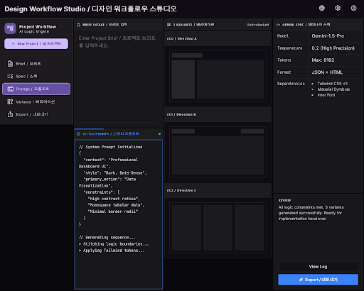
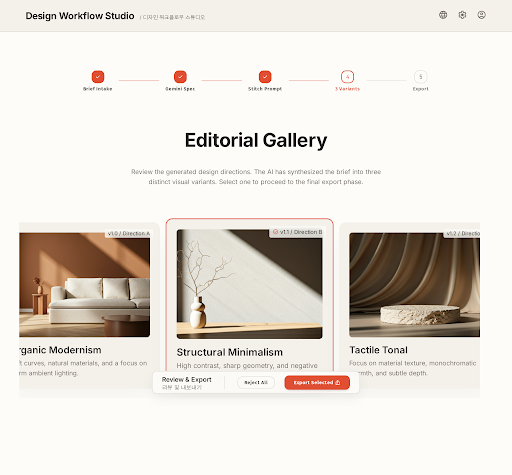
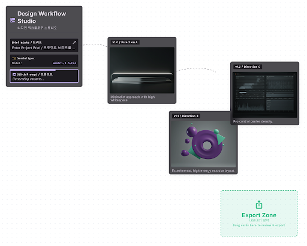

GitHub Pages 전용 공개 디자인 허브
한국어 기본 · English compatible아이디어를 바로 비교 가능한 3개의 전문 UI 방향으로 바꿉니다.
Gemini 3.1 Pro가 디자인 방향을 정의하고, Stitch MCP가 실제 시각 시안을 생성하며, 최종 선택안은 코드/페이지로 정리하는 반복형 디자인 워크플로입니다.
- 3
- 실제 Stitch 화면
- 14
- 확인된 MCP 도구
- 1
- 전용 GitHub Pages
Adaptive Synthesis Pro Control · Editorial Gallery · Creative Board Korean-first + bilingual typography
운영 방식
요청이 들어오면 항상 같은 기준으로 설계합니다.
이 허브는 디자인 요청을 누적하고, 각 요청마다 브리프·Stitch 프롬프트·원본 출력·결정사항을 남기는 공개 랜딩 페이지입니다.
- 01Brief Intake
목표, 사용자, 화면 종류, 톤, 참고 서비스를 짧게 수집합니다.
- 02Spec by Gemini
Gemini 3.1 Pro로 색상, 타입, 밀도, 레이아웃 기준을 정합니다.
- 03Stitch MCP
Stitch MCP에 실제 프롬프트를 보내 화면과 디자인 시스템을 생성합니다.
- 043 Design Takes
보수적·강력 추천·실험적 방향을 비교 가능한 형태로 만듭니다.
- 05Review & Ship
선택안을 다듬고 HTML/React/Next.js 등으로 배포합니다.
첫 테스트 세트
같은 목적, 완전히 다른 3가지 디자인 언어
단순 색상 변경이 아니라 정보 밀도, 검토 방식, 인터랙션 모델 자체를 다르게 잡았습니다.
pro-control-center
전문가용 컨트롤 센터
프롬프트, 생성 시안, 내보내기 코드를 한 화면에서 동시에 보는 고밀도 운영 UI입니다.
- 3단 컬럼: 브리프 · 시안 · 코드
- Inter + Fira Code, 12–14px 중심
- 다크 패널, 파란 액션, 개발자 도구 같은 밀도
{ "model": "GEMINI_3_1_PRO", "variants": 3 }export function DesignCard() {\n return <section>...\n}editorial-gallery
에디토리얼 갤러리
클라이언트와 함께 보기 좋은 차분한 검토 공간입니다. 큰 카드와 여백으로 선택 피로를 줄입니다.
- 상단 5단계 진행 바
- 대형 가로 캐러셀, 스냅 스크롤
- 따뜻한 라이트 팔레트와 세리프 헤딩
넉넉한 여백과 큰 미리보기로 의사결정을 돕습니다.
creative-board
크리에이티브 보드
FigJam/Miro처럼 시안을 공간에 펼쳐 놓고 드래그하며 선택하는 실험적인 캔버스 UI입니다.
- 플로팅 브리프 패널
- 흩어진 3개 시안 노드와 연결선
- Export Zone으로 드롭하는 제스처
실제 Stitch MCP 출력
Stitch MCP로 생성한 3개 화면을 랜딩 페이지에 반영했습니다.
Google Stitch MCP 서버와 OAuth 인증을 사용해 생성한 원본 JSON, 스크린샷, HTML을 저장했습니다. 아래 이미지는 외부 URL이 아니라 저장소에 보관한 실제 결과물입니다.
create_project, generate_screen_from_text, list_screens JSON을 designs/에 보관했습니다.
3개 PNG와 3개 HTML을 assets/stitch-run-001/에 저장해 만료 URL에 의존하지 않습니다.
랜딩 페이지는 한국어를 기본으로 렌더링하고, EN 토글과 ?lang=en을 지원합니다.

01 · Pro Control Center
고밀도 전문가 대시보드
브리프, Stitch Prompt, 3개 Variant, Export Code를 한 화면에 넣은 개발자 도구형 방향입니다.
07f1417d…

02 · Editorial Gallery
차분한 클라이언트 리뷰 공간
큰 카드, 넉넉한 여백, 단계 진행 바를 중심으로 의사결정 피로를 줄이는 방향입니다.
fd64b2f3…

03 · Creative Board
공간형 실험 캔버스
FigJam/Miro처럼 시안을 흩뿌려 비교하고 Export Zone으로 선택하는 플레이풀한 방향입니다.
92bfa807…
앞으로의 요청 방식
디자인 요청은 짧아도 됩니다. 대신 결정 기준은 남깁니다.
아래 포맷으로 요청하면 Gemini/Stitch 워크플로에 바로 넣을 수 있습니다.
목표: 어떤 화면/사이트를 만들고 싶은지 사용자: 누가 쓰는지 톤: 전문적 / 따뜻함 / 실험적 / 고급스러움 참고: 닮았으면 하는 서비스나 싫은 예시 필수 요소: 반드시 들어가야 하는 콘텐츠 출력: 3개 시안 / HTML / Next.js / PPT 등
GitHub Pages 운영
공개 저장소 + GitHub Pages로 운영
이 사이트는 전용 공개 저장소에서 관리하고, GitHub Pages가 바로 배포할 수 있도록 순수 HTML/CSS/JS로 구성했습니다.
github.com/cskwork/design-workflow-studiorequests/에 브리프와 결정사항을 보관합니다.
매 요청마다 최소 3개 방향을 비교합니다.
선택된 방향만 코드로 강화해 산출물 품질을 유지합니다.